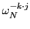
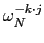

suivant: Les propriétes
monter: Transformée de Fourier
précédent: fourier_cn
Table des matières
Index
Soit N un entier.
On considère une suite x périodique de période N : elle est
entièrement déterminée par la liste
x = [x0, x1,...xN-1].
La transformée de Fourier discréte est une transformation FN qui a une
suite x périodique de période N fait correspondre une suite y,
périodique de période N, définie pour k = 0..N - 1 par :
(FN(x))k = yk =  xj
avec
xj
avec  racine N-ième de l'unité.
racine N-ième de l'unité.
Le but est de calculer pour k = 0..N - 1:
xj
avec
= exp( )
)
La méthode de la transformée de Fourier rapide permet de calculer
rapidement ces sommes si N est une puissance de 2.
Sous-sections
Documentation de giac écrite par Renée De Graeve